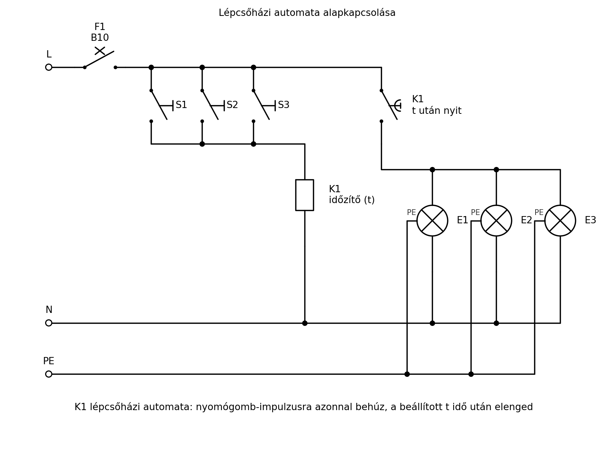
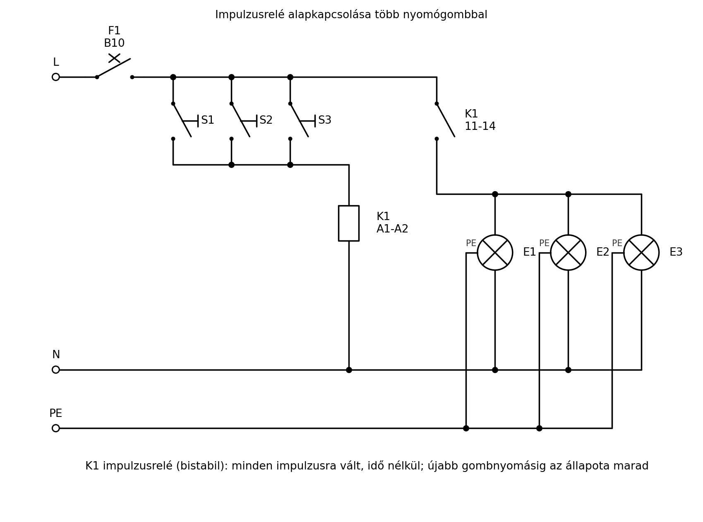

Statikus változat (mint a PDF-ben)
Egy lépcsőházban a világítást a lakó az egyik szinten bekapcsolja, felmegy a lakásához, majd a világításnak magától el kell aludnia. Ha ezt nem automatizáljuk, valaki vagy égve hagyja a lámpákat, vagy minden szinten bonyolult váltó- és keresztkapcsolást kell építeni, mint amilyet a Világítási áramkörök: egypólusú, soros, váltó és kereszt alfejezetben tanultál. A lépcsőházi automata, az impulzusrelé és az időrelé ugyanazt a gondolatot viszi tovább: több nyomógomb egyetlen világítást vezérel, de a kapcsolási logika időt is ad hozzá, vagy a nyomógombok működését teszi egyszerűbbé és üzembiztosabbá.
Képzeld el a lépcsőházat úgy, hogy a földszinten, az emeleteken és a kijáratnál egy-egy nyomógomb van, a mennyezeten pedig párhuzamosan kötött lámpák. Ha bármelyik gombot megnyomod, a világítás bekapcsol, majd a beállított idő után lekapcsol. A szerelő dolga, hogy ezt a funkciót a megfelelő készülékkel, a készülék terhelhetőségét és a mai LED-lámpák sajátosságait is figyelembe véve, üzembiztosan bekösse.
Továbbvitt eredmény. A relés kapcsolási logikát és az időzítés fogalmát később az Intelligens épület: tervezés, üzembe helyezés, energiahatékonyság alfejezetben az épületautomatikai kapcsolásokban, valamint a Világítási áramkörök építése: egypólusú, váltó, kereszt gyakorlati útmutatóban is használjuk.
Definíció. A lépcsőházi automata olyan időzített kapcsolókészülék, amely a nyomógomb impulzusára bekapcsolja a világítást, és a beállított idő letelte után a világítás áramkörét magától megszakítja. A mai lépcsőházi automaták általában elektronikus készülékek, korábban elektromechanikus, óraműves vagy hőkioldós megoldások is léteztek.
A kapcsolás két, egymástól jól elkülöníthető részből áll:
A nyomógombokat párhuzamosan kell kötni. Ha sorba kötnéd őket, akkor csak akkor lenne vezérlés, ha az összes gombot egyszerre nyomnád meg.
A lépcsőházban ez a gyakorlatban úgy néz ki, hogy a lépcsőházi automatától két ér indul felfelé: a fázis (barna) és a vezérlő visszatérő ér (például szürke), és mindkettő végighurkolódik az összes nyomógombdobozon. Minden nyomógomb ennek a két érnek a végpontjai közé kapcsol, ezért bármelyik egymagában zárja a vezérlőkört. Az alábbi ábra bal oldala ezt a helyes, párhuzamos bekötést, a jobb oldala a hibás láncolást mutatja, amikor a gombok egymás után, sorba kerülnek.
A párhuzamos bekötés ellenőrzése egyszerű: feszültségmentes állapotban az automata L és S kapcsa között bármelyik gomb megnyomására kis ellenállást kell mérni. Ha csak az összes gomb együttes nyomására van folytonosság, a gombok sorba kerültek. A HTML-kiadásban a helyes és a hibás változat külön is megnézhető.

A rajzon a felső vízszintes vezeték az F1 kismegszakító utáni L fázis, alatta az N nulla, legalul a PE védővezető, amelyre a lámpatestek csatlakoznak. Az S1, S2, S3 nyomógombok párhuzamosan kapcsolódnak a K1 lépcsőházi automata vezérlő áramkörére. Ha bármelyik nyomógombot megnyomod, a vezérlő áramkör bezárul. A K1 készülék ekkor behúzza a K1 érintkezőjét, és az E1–E3 lámpák fázisellátása megvalósul. A beállított idő lejárta után az érintkező kinyit, a lámpák elalszanak.
Figyelem. A gombok áramköre csak vezérlő áramot visz, ezért vékonyabb vezetékkel is szerelhető, de a lámpa- és gombáramköröket ne keverd össze. A lámpaáramot a K1 érintkezője kapcsolja, tehát annak terhelhetősége a mértékadó.
A lépcsőházi automata terhelhetőségénél nemcsak az üzemi áramot kell nézni, hanem a lámpatípust is. Az izzólámpa hideg izzószálának ellenállása kicsi, ezért a bekapcsolás pillanatában a névleges áram többszöröse folyik.
Számítás. Adott: 8 db, egyenként 60 W-os izzólámpa,
.
Keresett: az üzemi áram, és a bekapcsolási áram becslése.
A teljesítmény:
Az üzemi áram:
Az izzólámpák hidegindítási árama a gyakorlati becslés szerint a névleges áram körülbelül 8–15-szöröse lehet. Ha a közbülső 10-szeres értéket vesszük:
Ezért egy 10 A névleges áramú érintkező sem feltétlenül alkalmas 2,09 A üzemi áramú izzóterhelés kapcsolására. A készülék gyártója izzóterhelésre általában csökkentett teljesítményt vagy maximális darabszámot ad meg. (ellenőrizendő: a kiválasztott készülék gyártói adatlapja)
Szabály. A készülék érintkezőjét mindig a tényleges lámpatípusra, a gyártó adatlapján megadott maximális terhelés szerint válaszd ki. LED-lámpáknál az üzemi áram kicsi, de a meghajtó elektronika bekapcsolási árama rövid időre szintén nagy lehet, ezért a LED-ek maximális darabszámát is ellenőrizni kell.
Definíció. Az impulzusrelé olyan bistabil kapcsolókészülék, amely minden nyomógomb-impulzus hatására ellenkező állapotba vált: ha az érintkezője nyitott volt, behúz, ha behúzott, kinyit. A köznyelvben léptetőrelének is nevezik; nem tévesztendő össze a lépcsőházi automatával, amely időzített lekapcsolást végez.
Az impulzusrelé előnye, hogy egyetlen központi készülékkel sok nyomógombot lehet párhuzamosan kötni. A nyomógombok nem a főáramkört szakítják meg, hanem a készülék tekercsét gerjesztik. Minden gombnyomás egy rövid, megszakított áramkört hoz létre, ezért az „impulzus” elnevezés.

A bekötés nagyon hasonlít a lépcsőházi automata bekötéséhez, de a készülék viselkedése más. A nyomógombok párhuzamosan csatlakoznak a tekercsre, a lámpák pedig a K1 érintkezőn keresztül kapnak feszültséget. Ha még egyszer megnyomsz egy gombot, a készülék lekapcsolja a lámpákat.
Megjegyzés. A készülék kapocsjelölése a gyártó típusától függ. A vezérlőtekercs általában A1 és A2 jelű, a váltóérintkező pedig gyakran 11-12-14 jelű, ahol a 11 a közös, a 12 a bontó, a 14 a záró érintkező. Régi készülékeken előfordulhat 1-2-4 jelölés is. A bekötés előtt mindig ellenőrizd a készülék oldalán lévő kapcsolási rajzot és a gyártói adatlapot. (ellenőrizendő: a készülék kapocsjelölése)
Mindkét készülék moduláris, tehát az elosztóban a 35 mm-es DIN-sínre pattintható, ugyanúgy, mint a kismegszakító. Az alábbi ábrán a lépcsőházi automatán a tápkapcsok (1), az időállító (2), az üzemmódkapcsoló (3) és a nyomógomb-bemenet, illetve a lámpakimenet kapcsai (4) láthatók; az impulzusrelén a tekercs és az érintkező kapcsai (5), a kézi kar (6) és az állásjelző ablak (7). Az oldalnézet azt mutatja, hogyan akad a készülék a sín (8) felső peremére, és hogyan rögzíti alul a rugós retesz (9).

A kezelőelemek és a kapcsok elrendezése típusonként eltér, ezért a rajz csak a jellemző részeket mutatja; a készülék oldalán lévő kapcsolási rajz a mérvadó. Az impulzusrelé kézi karja hibakereséskor hasznos: feszültségmentes állapotban kézzel átváltva folytonosságméréssel ellenőrizhető az érintkező. A HTML-kiadásban az egyes részekre mutatva olvasható a rövid leírásuk.
Szabály. A nyomógombokat mindig párhuzamosan kösd, függetlenül attól, hogy lépcsőházi automatát, impulzusrelét vagy időrelét használsz. A párhuzamos kapcsolás logikai VAGY-kapcsolatot jelent: elég, ha legalább egy gomb zár.
Definíció. Az időrelé olyan vezérlőkészülék, amely a bemenetére adott vezérlőjel hatására az érintkezőit nem azonnal, hanem beállított idő után, illetve meghatározott időbeli sorrend szerint kapcsolja.
A gyakorlatban leggyakrabban az alábbi késleltetési típusokkal találkozol:
Az alábbi idődiagram sávonként a vezérlőjelet (vékony vonal) és a kimeneti 11–14 érintkező állapotát (vastag vonal) mutatja. Bekapcsolási késleltetésnél (t = 5 s) a 2 s-kor megjelenő vezérlőjelre a kimenet 7 s-kor húz be, a t-nél rövidebb jelre egyáltalán nem; kikapcsolási késleltetésnél a kimenet a vezérlőjellel együtt húz be, és annak megszűnése után még t ideig zárva marad. A lépcsőházi funkció (t = 10 s) impulzusra azonnal bekapcsol; a futó idő alatti újranyomás sok készüléken újraindítja az időt (itt 4 + 10 = 14 s-kor kapcsol ki). Összehasonlításként az impulzusrelé minden impulzusra vált, idő nélkül, a villogó pedig a vezérlőjel fennállása alatt 1 s be / 1 s ki ütemben kapcsol.

Az interaktív változatban funkciót választhatsz, állíthatod a t időt (1–30 s), és a „Nyomógomb” gombbal valós időben rajzoltathatod a vezérlőjelet és a kimenetet; a lámpa jelzi, hogy a kimenet zárt-e. A valódi készülékek viselkedése (például az újraindítás) gyártófüggő (ellenőrizendő: a készülék működési leírása).
A lépcsőházi világításhoz tehát a lépcsőházi funkciójú időrelé vagy az időzített lekapcsolású készülék illik. A kikapcsolási késleltetést gyakran használják például szellőzőventilátorok utánfutási idejére: a ventilátor a kapcsoló kikapcsolása után még a beállított ideig tovább jár.
Szabály. Mindig nézd meg, hogy az időrelé bemenete külön vezérlőbemenettel rendelkezik-e, vagy a tápfeszültség megjelenése maga a vezérlés. Egyes készülékeknél a tápfeszültség ráadása indítja az időzítést, másoknál külön nyomógombos vezérlőbemenet van. A bekötés előtt ezért a gyártói kapcsolási rajz az elsődleges. (ellenőrizendő: a készülék működési leírása)
Egy társasház lépcsőházában a régi izzólámpás lépcsőházi automatát LED-lámpákra cserélték, de a szerelő a régi automatát megtartotta. A lakók azt tapasztalták, hogy kikapcsolt állapotban a LED-lámpák halványan világítottak, néha villogtak.
Tünet. Az automatának le kellene kapcsolnia, a lámpák mégsem teljesen sötétek.
Hipotézis. Az elektronikus lépcsőházi automata belső áramköre kikapcsolt érintkező állapotban is nagyon kis áramot enged át, vagy a kapcsain marad kisfeszültség. A régi izzólámpa ezt az áramot nem tudta meggyújtani, a LED-lámpa viszont igen érzékeny, ezért halványan világít.
Mérés. A szerelő a kikapcsolt állapotban megmérte a lámpa kapcsain a feszültséget. A műszer nem nullát, hanem több tíz volt nagyságrendű maradékfeszültséget mutatott. Ez a mérés nem pontos terhelési adat, de jól jelzi, hogy nem teljes a leválasztás. (ellenőrizendő: a készülék szivárgó áramára vonatkozó gyártói adat)
Ok. A régi automata nem volt LED-kompatibilis, és a minimális terhelési feltétele sem teljesült. A LED-ek üzemi árama túl kicsi volt ahhoz, hogy a készülék stabilan kapcsoljon, illetve a maradékáram elegendő volt a LED meghajtók zavaró működéséhez.
Javítás. A szerelő LED-kompatibilis lépcsőházi automatát épített be, és ellenőrizte, hogy a lámpák összteljesítménye a készülék minimális és maximális terhelési tartományán belül van. Szükség esetén a gyártó által javasolt terhelőelem is alkalmazható.
Megelőzés. A lámpacsere előtt ellenőrizd a kapcsoló- és időzítő készülék LED-kompatibilitását, a minimális terhelésre vonatkozó adatot, és a maximális számú LED-lámpa értéket. (ellenőrizendő: gyártói katalógusadatok)
Cél. Tanulói gyakorlópanelen impulzusrelé bekötése három nyomógombbal és két lámpával, majd a működés ellenőrzése.
Eszközök és anyagok. Impulzusrelé, három nyomógomb, két lámpahely vagy foglalat, sorkapcsok, vezetékek, érvéghüvelyek, szerszámok, multiméter, kapcsolási rajz.
Biztonsági korlát. A feladat hálózati feszültségen csak jogosult oktató felügyeletével végezhető; hálózati feszültségen önállóan ne dolgozz. Tanulói gyakorlásra használj feszültségmentes panelt vagy törpefeszültségű modellt.
A szerelés előtt hajtsd végre az öt biztonsági szabályt:
Lépések.
A 4. és 5. lépés bekötését az alábbi ábra mutatja a gyakorlópanelen. Az F1 kismegszakító (1) kimenetéről két irányba megy fázis: a vezérlőkörbe a nyomógombok (5) közös bemenetére, a főkörbe a K1 impulzusrelé (2) 11-es kapcsára. A nyomógombok kimenete közös szürke éren jut az A1 kapocsra, az A2 az N-sorkapocsra (3) csatlakozik. A 14-es kapocsról a fekete kapcsolt fázis a két lámpára (6) megy, amelyek nullát az N-sorkapocsról, védővezetőt a PE-sorkapocsról (4) kapnak.
A lámpák árama csak a 11–14 érintkezőn halad át, a nyomógombokon a tekercs kis árama folyik. A HTML-kiadásban a vezérlőkört és a főkört rétegenként ki-be kapcsolhatod, így külön ellenőrizheted a két áramutat.
Ellenőrzési pontok. A tekercs ellenállása a gyártó adatlapja szerinti érték körül legyen. Egy megnyomott gomb ellenállása jellemzően 0,5 Ω alatt van, a nyitott érintkező pedig szakadást mutat. A lámpaáramkört ellenőrizd úgy is, hogy a K1 érintkező zárásakor a lámpák feszültséget kapnak.
Dokumentálás. Jegyezd fel a készülék típusát, a kapocsbeosztást, a mért ellenállásértékeket, és fényképezd le a bekötést a későbbi hibakereséshez.
Hiba 1: A nyomógombokat sorba kötik.
Ha a gombok sorba vannak kötve, csak akkor működik a vezérlés, ha
mindegyiket egyszerre nyomják. A helyes kapcsolás párhuzamos, mert így
bármelyik gomb önállóan be tudja kapcsolni a készüléket.
Hiba 2: A tekercs- és a lámpaáramkört
összekeverik.
A vezérlő áramkör kis áramú, a lámpaáramkör a tényleges terhelést viszi.
Ha a vastag lámpavezetéket a nyomógombra kötik, vagy a vezérlő fáziságat
a lámpa után veszik le, akkor a kapcsolás hibásan vagy életveszélyesen
működhet. A rajz szerint kell elkülöníteni a két áramkört.
Hiba 3: Az izzóterhelést a névleges érintkezőárammal
egyenértékűnek tekintik.
Az izzólámpa bekapcsolási árama többszöröse az üzemi áramnak, ezért az
érintkezők összehegedhetnek, vagy a készülék idő előtt tönkremegy. Az
izzóterhelésre mindig a gyártó által megadott csökkentett érték a
mérvadó. (ellenőrizendő: a készülék izzóterhelhetőségi
adata)
Hiba 4: A LED-lámpák minimális terhelését figyelmen kívül
hagyják.
A túl kevés LED-del terhelt kapcsolókészülék halványan világító vagy
villogó lámpát okozhat. A LED-kompatibilis készülék kiválasztása és a
gyártó által előírt minimális terhelés ellenőrzése kötelező.
(ellenőrizendő: LED-kompatibilitási adat)
1. feladat (A)
Magyarázd el a lépcsőházi automata és az impulzusrelé közötti működési
különbséget.
2. feladat (A)
Számítsd ki 6 db, egyenként 9 W-os LED-lámpa üzemi áramát 230 V hálózati
feszültségen.
3. feladat (B)
Egy lépcsőházi világításhoz 10 db, egyenként 75 W-os izzót szerelnek.
Számítsd ki az üzemi áramot, és becsüld meg a bekapcsolási csúcsáramot
10-szeres szorzóval. Mondd el, miért fontos ez a készülék
kiválasztásánál.
4. feladat (B)
Írd le szövegesen vagy készíts kapcsolási rajzot egy impulzusreléhez,
amelyet négy nyomógomb és két párhuzamos lámpa vezérlésére
használnak.
5. feladat (C)
Egy lépcsőházban a LED-lámpák kikapcsolt állapotban halványan villognak.
Sorold fel a lehetséges okokat, a mérési lehetőségeket és a
megoldást.
6. feladat (D)
A gyakorlópanelen a feszültségmentes ellenőrzés során a következő
értékeket méred: nyomógomb megnyomva 0,3 Ω, a tekercs ellenállása 2,4
kΩ, a záróérintkező behúzott állapotban 0,4 Ω, nyitott állapotban
szakadás. Értékeld a mérési eredményeket. Melyik alkatrész lenne hibás,
ha a záróérintkező behúzott állapotban több ohmot mutatna?
Önellenőrzés – válaszok
1. feladat megoldása
A lépcsőházi automata időzített kikapcsolást végez: a gomb megnyomására
bekapcsol, az idő lejárta után kikapcsol. Az impulzusrelé nem időzít:
minden gombnyomásra ellentétes állapotba vált, tehát be-, majd ki-, majd
újra bekapcsol.
2. feladat megoldása
Adott:
,
,
.
Keresett:
.
Ellenőrzés: a LED-ek üzemi árama kicsi, ez a gyakorlati nagyságrend reális. Ez cosφ = 1 feltételezésével adódik; LED-meghajtónál a teljesítménytényező kisebb (például 0,9 → 0,26 A, 0,5 → 0,47 A – a gyártói adat szerint), ezért a tényleges áram ennél nagyobb.
3. feladat megoldása
Adott:
,
,
.
Keresett:
és a becsült bekapcsolási csúcsáram.
A 10-szeres becslés szerint:
Fontos, mert a kapcsolóérintkezőnek a bekapcsolási csúcsot is el kell viselnie. Az izzóterhelésre a gyártó általában kisebb megengedett terhelést ad, mint az ellenállásos vagy LED-es terhelésre. (ellenőrizendő: a készülék gyártói adatai)
4. feladat megoldása
A rajz felépítése: az L felső buszról a négy nyomógomb párhuzamosan
leágazik, majd közös vezetéken a tekercs A1 kapcsára megy, az A2 az
N-re, az N alsó buszra. A főáramkörben az L buszról a K1 záróérintkező
egyik kapcsa, a másik kapcsáról a két párhuzamos lámpa, a lámpák másik
oldala az N buszra. A nyomógombok párhuzamosak, a lámpák
párhuzamosak.
5. feladat megoldása
Lehetséges okok: a régi készülék nem LED-kompatibilis, a LED-ek
összteljesítménye a minimális terhelés alatt van, a készülék szivárgó
árama vagy maradékfeszültsége miatt a LED meghajtók halványan működnek.
Mérés: kikapcsolt állapotban meg kell mérni a lámpakapcsokon a
feszültséget vagy a szivárgó áramot, és ellenőrizni a gyártói adatokat.
Megoldás: LED-kompatibilis készülék használata, terhelés növelése vagy a
gyártó által javasolt terhelőelem beépítése. (ellenőrizendő: a
konkrét készülék mérési és terhelési adatai)
6. feladat megoldása
A mért értékek megfelelők: a nyomógomb zárt állapotban 0,3 Ω, a tekercs
2,4 kΩ, a záróérintkező behúzva 0,4 Ω, nyitva szakadás. Ha a behúzott
záróérintkező több ohmot mutatna, az érintkezőfelület szennyezett, égett
vagy kopott lenne, ami melegedést és hibás kapcsolást okozna. A mérést
kizárólag feszültségmentes állapotban végezheted el.
A lépcsőházi automata a nyomógomb impulzusra bekapcsolja a világítást, és beállított idő után lekapcsolja. A nyomógombokat párhuzamosan kötik, hogy bármelyik gomb önállóan vezérelhessen. Az impulzusrelé ezzel szemben időzítés nélkül, minden nyomógomb-impulzusra vált, ezért többpontos központi világításhoz alkalmas. Az időrelé ennél általánosabb készülék: bekapcsolási, kikapcsolási, lépcsőházi vagy villogó funkcióval késlelteti az érintkezők kapcsolását. A szerelőnek mindig el kell különítenie a kis áramú vezérlő áramkört a lámpákat tápláló főáramkörtől. A készülék kiválasztásakor figyelembe kell venni az izzólámpák bekapcsolási áramcsúcsát, a LED-ek minimális terhelési követelményét és a LED-kompatibilitást. Hálózati feszültségen csak jogosult személy dolgozhat, a gyakorlati bekötést feszültségmentes állapotban, az öt biztonsági szabály szerint kell elvégezni. A relé- és időzítési logikát továbbvisszük az Intelligens épület: tervezés, üzembe helyezés, energiahatékonyság és a Világítási áramkörök építése: egypólusú, váltó, kereszt alfejezetekbe.